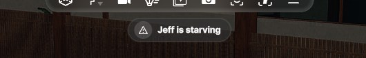
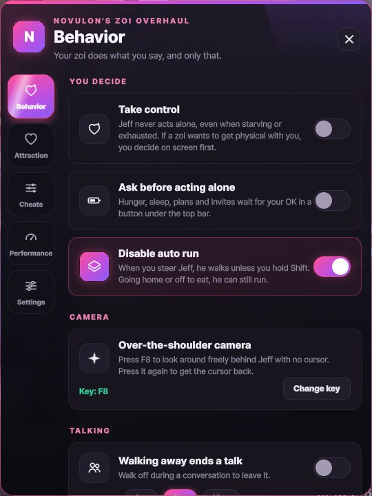
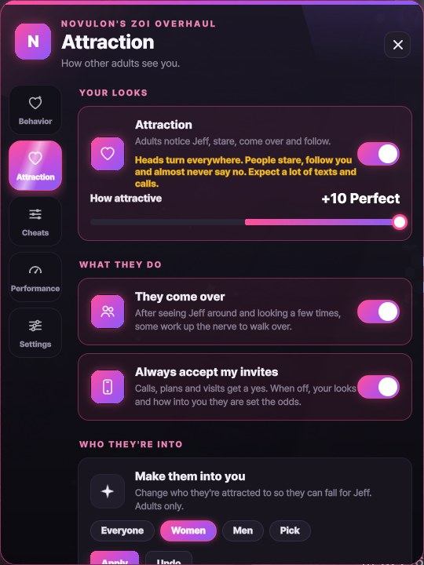
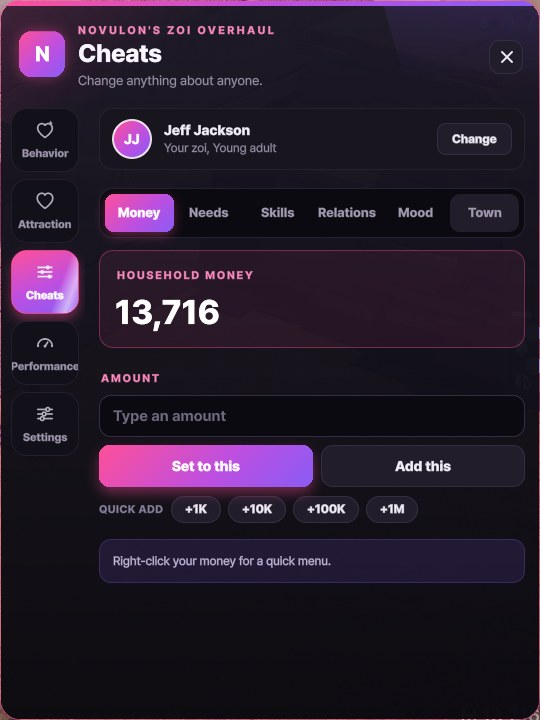
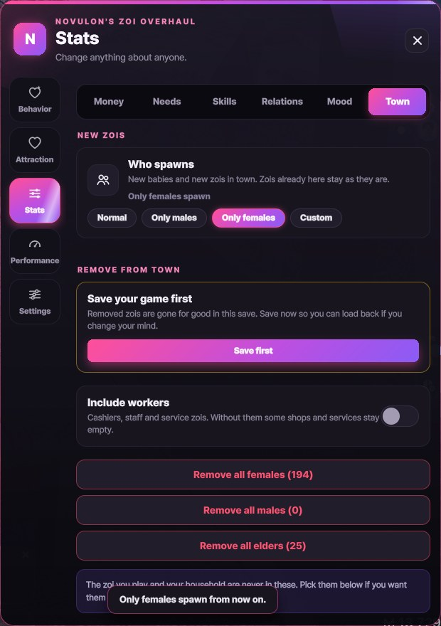
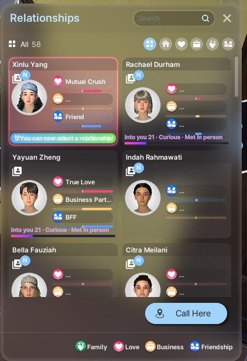
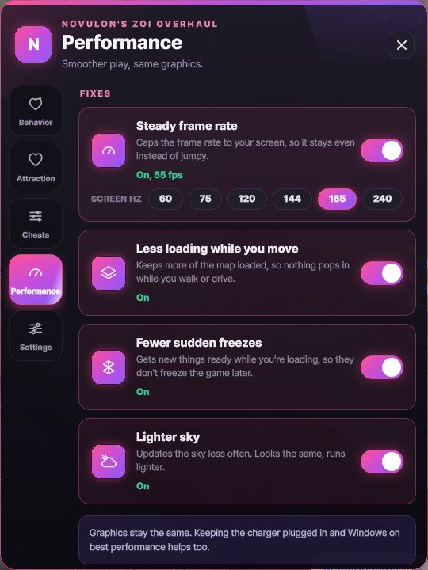

Novulon's ZOI Overhaul
Everything in one window: zois that act more like people, an attraction system, cheats for anyone, and smoother play. Press the purple N next to your icons to open it. Every part has its own switch.
Install
- Remove the old onesHad StatCheats, AI Remade or Lag Remover? Delete their folders from
Documents\inZOI\Mods\InGame first
- UnzipInto
Documents\inZOI\Mods. It lands in the InGame folder there
- Load a saveStart inZOI and load a save like you always do
- Press NThe purple N next to your icons in the bottom right
Optional: with the game closed, open the mod's Start-up fixes folder and run Apply start-up fixes once. Undo start-up fixes puts everything back.
Your zoi
It asks firstYour zoi doesn't wander off on their own. When they need something, a button under the top bar pulses. Click it and they go take care of it.
Take controlTurn it on and your zoi never acts by themselves, not even in an emergency.
Walk away to end a chatWalking off ends the conversation, so nobody holds you in place.
No more auto runYour zoi walks unless you hold Shift.
Your pronounsAuto, he, she or your own words.
Over-the-shoulder cameraPress F8 to look around freely behind your zoi with no cursor. Pick another key if you like.
A town that feels alive
No more clippingZois who end up inside each other step apart and say hi.
People talkZois chat with others their age, friends greet you by name, and passers-by think out loud about their day.
Real personalitiesFlirty and outgoing zois are bolder, shy ones hesitate, and mean or snobby ones are colder.
2,560 linesEverything above their heads is hand-written, from first looks to jealous gossip.
Attraction (adults only)
How attractive you arePick a level from "seen as ugly" to "perfect". Adults notice you, stop and look, and after seeing you around they come over to say hi.
AdmirersSome follow you at a distance, work up the nerve and call out "Excuse me!", or give up and walk away.
More yesesThe higher your level, the more your hugs, kisses and flirts land. Calls, plans and visits can always get a yes.
Into youEach card in the game's Relationships list shows how into you they are, and whether you met in person or by text.
You chooseWhen someone wants to hug or kiss you, a card asks if you're okay with it.
TextsAdmirers text first, partners send sweet messages, and a photo with someone gets reactions, in the game's own phone.
Jealousy and gossipAdmirers get jealous when someone else flirts with you, and flirting with someone taken gets people talking.
Who likes whoChange who adults are attracted to: everyone, women, men or people you pick. You can undo it.
Cheats
MoneySet or add any amount. You can also right-click your money on screen for a quick menu.
Needs, skills and moodFor anyone in your household or nearby. Fill needs, freeze them at full, or make them drop 2 to 4 times slower. Put any skill at any level.
ImmortalPick any zoi and they never die, not even from starving.
RelationshipsLove, friendship and business with anyone. Right-click a card in the game's Relationships list to max it or delete it. Love only between adults.
TownChoose who shows up in town (normal, only men, only women or your own mix), and clear out crowds when you want a quieter city. No elders turns elders into adults. Never your zoi or your household, and it asks you to save first.
Performance
Steady frame rateMatched to your screen, so it stays even instead of jumping around.
Less loading while you moveKeeps more of the town ready, so walking and driving don't stutter.
Fewer sudden freezesGets effects ready while the game loads, not in the middle of playing. The sky updates less often too.
Same graphicsNothing is turned down, and every fix has an off switch that brings your own settings back.
Inside the game

What your zoi needs shows up at the top. One click and they go.

How your zoi behaves

How attractive you are

Cheats for anyone

Who spawns, and who goes

Right-click a relationship

Smoother, same graphics